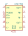
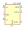
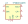
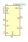

| Symbol |
Description |
ICL7660 | Description: Switched-Capacitor Voltage Converter, 1.5V to 10.0V operating supply voltage, 10mA with a 0.5V output drop, SO-8/DIP-8/µMAX-8/TO-99
Keys: monolithic CMOS switched capacitor voltage converter invert double divide multiply
Datasheet: http://datasheets.maximintegrated.com/en/ds/ICL7660-MAX1044.pdf |
LM2665M6 | Description: Switched Capacitor Voltage Converter, Doubles or Splits Input Supply Voltage (2.5 V to 5.5 V or 1.8 V to 11 V), 40 mA, SOT-23-6
Keys: switched capacitor voltage converter doubler splitter
Datasheet: https://www.ti.com/lit/ds/symlink/lm2665.pdf |
LM2776 | Description: Switched capacitor inverter, inverts positive voltage +2.7 to +5.5V to negative, 200mA, SOT-23-6
Keys: Switched capacitor inverter
Datasheet: http://www.ti.com/lit/ds/symlink/lm2776.pdf |
LM27761 | Description: low-noise regulated switched-capacitor voltage inverter with 2.7V-5.5V input to -1.5 to -5V Output Voltage, WSON-8
Keys: low-noise switched capacitor voltage converter invert
Datasheet: http://www.ti.com/lit/ds/symlink/lm27761.pdf |

LM27762 | Description: Low-noise inverting charge pump with both positive and negative LDO's, with 2.7V-5.5V input to +1.5 to +5V and -1.5 to -5V Output Voltage, WSON-12
Keys: Low-noise inverting charge pump with both positive and negative LDO's
Datasheet: http://www.ti.com/lit/ds/symlink/lm27762.pdf |
LM7705 | Description: Negative bias generator, low-noise, 3-5.25V input, -0.232V fixed output, VSSOP-8
Keys: switched capacitor voltage converter inverter negative bias regulator
Datasheet: http://www.ti.com/lit/ds/symlink/lm7705.pdf |

LMC7660 | Description: Voltage converter from +1.5V to +10V to +1.5V to +10V, SO-8/DIP-8
Keys: Voltage converter
Datasheet: http://www.ti.com/lit/ds/symlink/lmc7660.pdf |
LT1054 | Description: Switched-Capacitor Voltage Converter with Regulator, output current 100mA, operating range 3.5V to 15V, low loss 1.1V at 100mA, DIP-8/SO-8
Keys: monolithic bipolar switched capacitor voltage converter regulator inverter doubler shutdown
Datasheet: https://www.analog.com/media/en/technical-documentation/data-sheets/1054lfh.pdf |
LT1054L | Description: Switched-Capacitor Voltage Converter with Regulator, output current 125mA, operating range 3.5V to 15V, low loss 1.1V at 100mA, DIP-8/SO-8
Keys: monolithic bipolar switched capacitor voltage converter regulator inverter doubler shutdown
Datasheet: https://www.analog.com/media/en/technical-documentation/data-sheets/1054lfh.pdf |
LT1054xSW | Description: Switched-Capacitor Voltage Converter with Regulator, output current 100mA, operating range 3.5V to 15V, low loss 1.1V at 100mA, SO-16
Keys: monolithic bipolar switched capacitor voltage converter regulator inverter doubler shutdown
Datasheet: https://www.analog.com/media/en/technical-documentation/data-sheets/1054lfh.pdf |
LTC1044 | Description: Switched Capacitor Voltage Converter, 1.5V to 9V supply operation, 200uA Max No Load Supply Current at 5V, DIP-8/TO-99
Keys: monolithic CMOS switched capacitor voltage converter invert double divide multiply boost
Datasheet: https://www.analog.com/media/en/technical-documentation/data-sheets/lt1044.pdf |
LTC660 | Description: Monolithic CMOS switched-capacitor from 1.5V to 5.5V up to 100mA, SO-8/DIP-8
Keys: monolithic CMOS switched capacitor voltage converter invert double divide multiply boost
Datasheet: https://www.analog.com/media/en/technical-documentation/data-sheets/660fa.pdf |
MAX1044 | Description: Switched-Capacitor Voltage Converter, 1.5V to 10.0V operating supply voltage, 10mA with a 0.5V output drop, SO-8/DIP-8/MAX-8/TO-99
Keys: monolithic CMOS switched capacitor voltage converter invert double divide multiply boost
Datasheet: http://datasheets.maximintegrated.com/en/ds/ICL7660-MAX1044.pdf |
RT9361AxE | Description: Switched capacitor boost, Fixed 5V output, 110mA, SOT-23-6
Keys: Switched capacitor boost
Datasheet: https://www.richtek.com/assets/product_file/RT9361A=RT9361B/DS9361AB-14.pdf |
RT9361BxE | Description: Switched capacitor boost, Fixed 4.5V output, 150mA, SOT-23-6
Keys: Switched capacitor boost
Datasheet: https://www.richtek.com/assets/product_file/RT9361A=RT9361B/DS9361AB-14.pdf |

TPS60151DRV | Description: 5V, 140mA charge-pump, WSON-6
Keys: charge pump
Datasheet: https://www.ti.com/lit/ds/symlink/tps60151.pdf |
TPS60500DGS | Description: 250mA High-Efficiency Step-Down Charge Pump Regulator, Adjustable Output Voltage, MSOP-10
Keys: Regulator Step-Down Charge Pump TPS Texas Instruments Ti
Datasheet: http://www.ti.com/lit/ds/symlink/tps60503.pdf |
TPS60501DGS | Description: 250mA High-Efficiency Step-Down Charge Pump Regulator, 3.3V Output Voltage, MSOP-10
Keys: Regulator Step-Down Charge Pump TPS Texas Instruments Ti
Datasheet: http://www.ti.com/lit/ds/symlink/tps60503.pdf |

TPS60502DGS | Description: 250mA High-Efficiency Step-Down Charge Pump Regulator, 1.8V Output Voltage, MSOP-10
Keys: Regulator Step-Down Charge Pump TPS Texas Instruments Ti
Datasheet: http://www.ti.com/lit/ds/symlink/tps60503.pdf |
TPS60503DGS | Description: 250mA High-Efficiency Step-Down Charge Pump Regulator, 1.5V Output Voltage, MSOP-10
Keys: Regulator Step-Down Charge Pump TPS Texas Instruments Ti
Datasheet: http://www.ti.com/lit/ds/symlink/tps60503.pdf |